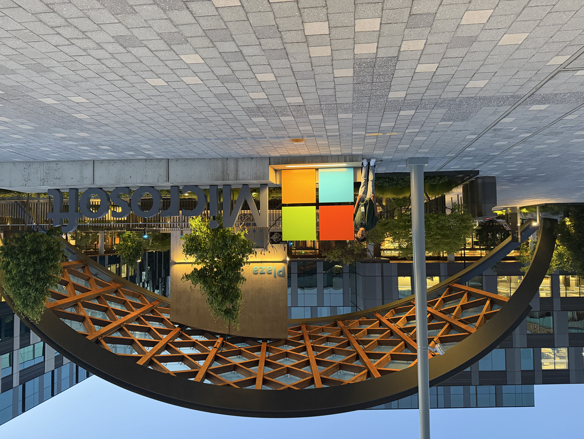
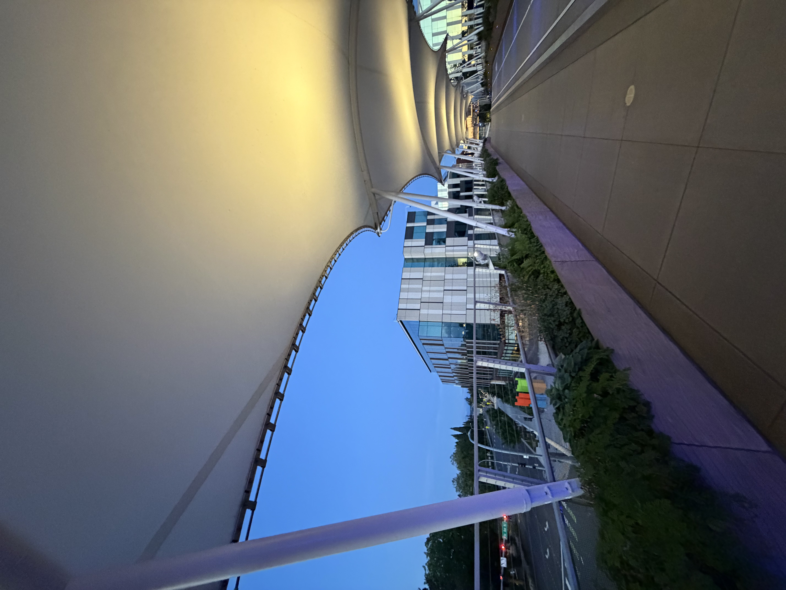

Career Highlight
Machine Learning Engineering Internship
Worked as an MLE Intern at Microsoft, contributing to ODSP systems and improving Copilot response accuracy with RAG pipelines. Explored different LLMs to generate better retrieval queries and ran recall-focused testing to optimize grounding quality.